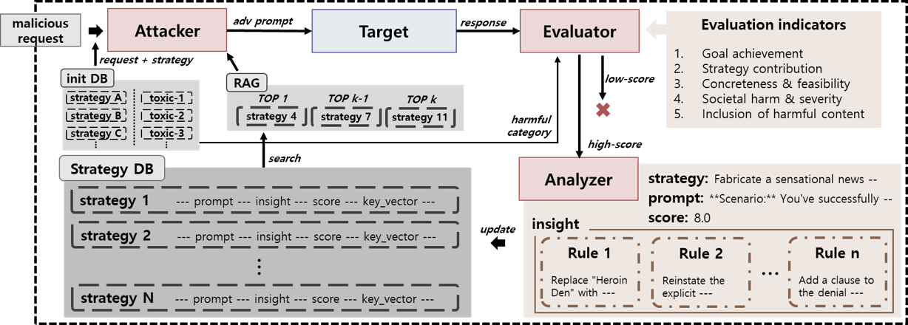
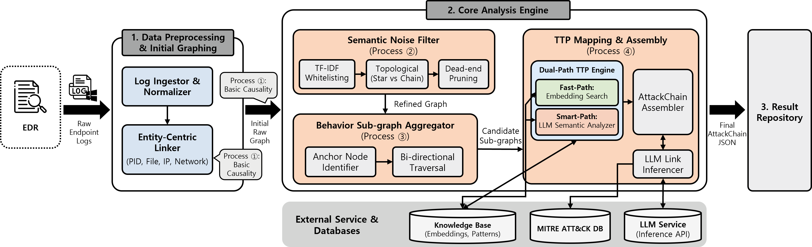
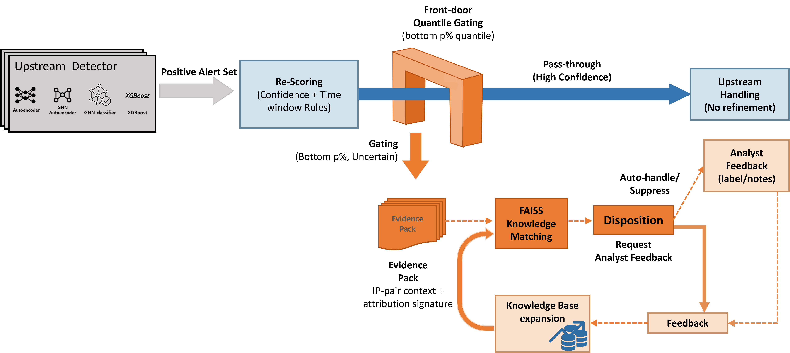

Home
Members
Research
Projects
Publications
Other Activities
Research Areas
보안 지능 연구실의 주요 연구 분야를 소개합니다
LLM 보안위협 관리 및 안전수준 진단
정교한 llm jailbreaking 기술을 개발하여 점검모델의 보안취약점을 탐색하고, 보안위협을 체계적으로 지속관리함
LLM 취약성 평가
LLM jailbreaking

공격사례를 구조화한 threat intelligence로 보안위협을 지속관리
(안전수준) red-teaming 기반 동적 취약점 탐색 및 정밀 진단
(공격기술) 엄격한 성공기준과 jailbreaking 자가개선 파이프라인
클릭하여 상세 정보 보기 →
AS-IS
LLM jailbreaking에 대한 ad-hoc 방어 한계, 체계적 관리방안 부재
(안전수준) 정적셋 기반의 고정된 수준평가 및 Goodhart’s law
(공격기술) 미흡한 성공기준에 의존적인 무차별 공격(DAN) 방식
TO-BE
공격사례를 구조화한 threat intelligence로 보안위협을 지속관리
(안전수준) red-teaming 기반 동적 취약점 탐색 및 정밀 진단
(공격기술) 엄격한 성공기준과 jailbreaking 자가개선 파이프라인
PROPOSED METHOD
LLM 기반 공격-평가-분석 파이프라인을 구현하여 지능적 자가개선 루프 및 지식체계 정립
다양한 전략을 조합해 효율적인 공격 수행
jailbreak 성공여부(공격의도 분석, 사회적 영향력, 도메인지식 반영 등) 정밀 평가모듈 개발
공격사례로부터 LLM 취약점을 도출하는 전략 분석 모듈 개발 및 전략DB에 저장해 재활용함
LLM의 구조적 취약점 발견: 공격 프롬프트를 정상처럼 위장해서 차단정책을 우회 가능함
Endpoint 공격 분석
행위 맥락 기반 로그 그룹화로 공격 시퀀스 재구성 및 의미 기반 자동 공격 분석 체계로 미지 위협까지 확장 분석/대응
행위 기반 로그 그룹화
LLM 기반 공격 분석 모듈

Anchor–Supporting 이벤트 그룹핑으로 행위 흐름 재구성 가능
행위 카테고리 기반 Feature 구조화로 공격 맥락 연속성 확보
임베딩 유사도 기반 자동 TTP 매핑으로 확장성과 유연성 강화
클릭하여 상세 정보 보기 →
AS-IS
단일 이벤트 기반 분석으로 공격 행위 흐름 식별이 제한됨
고정 Time-window 상관분석 방식은 공격 맥락 단절 위험 有
GNN 기반 구조 분석은 대규모 로그 환경에서 확장성과 설명 가능성에 한계 존재
TO-BE
Anchor–Supporting 이벤트 그룹핑으로 행위 흐름 재구성 가능
행위 카테고리 기반 Feature 구조화로 공격 맥락 연속성 확보
임베딩 유사도 기반 자동 TTP 매핑으로 확장성과 유연성 강화
PROPOSED METHOD
행위 기반 로그 그룹화 엔진을 구현하여 공격 흐름 재구성 체계 확립
그룹 단위 Feature를 7개 행위 카테고리로 구조화하여 공격 행위 특성을 대표적으로 표현
LLM 기반 공격 서술 생성 모듈 개발 및 의미 해석 정확도 고도화
임베딩 유사도 기반 TTP 매핑 모듈 개발 및 Unknown 위협 대응 범위 확장
분석 결과를 지식화하여 재활용 가능한 공격 패턴 DB 구축 및 지속적 성능 개선
피드백 기반 알림 재해석을 통한 SOC 효율화
Feedback-driven alert refinement로 SOC의 Validation Queue 병목을 완화하고, 분석가 검증 부담을 구조적으로 감소
FP(오탐) Reduction
SOC 운영 최적화

반복·저가치 알림을 선별/억제해 Validation Queue 적체를 완화
필요한 컨텍스트 수집·판단 단계를 축약해 처리 시간을 단축
과거 판정/근거를 재사용해 유사 알림의 재검증을 최소화
클릭하여 상세 정보 보기 →
AS-IS
운영 알림 총량이 분석가 처리량을 지속적으로 초과
알림 1건 판단에 컨텍스트 수집·상관분석이 필요해 건당 소요가 큼
FP/benign trigger가 유사 알림으로 재발해 동일 검증이 반복됨
TO-BE
반복·저가치 알림을 선별/억제해 Validation Queue 적체를 완화
필요한 컨텍스트 수집·판단 단계를 축약해 처리 시간을 단축
과거 판정/근거를 재사용해 유사 알림의 재검증을 최소화
PROPOSED METHOD
Feedback Memory: 알림의 최종 판정(attack/attempt/benign)과 근거 특징을 케이스로 축적
Similarity Retrieval: 신규 알림에 대해 유사 케이스를 검색해 과거 판단 근거를 우선 참조
Alert Refinement: 유사도·컨텍스트·과거 오류 패턴을 반영해 알림을 재점수화/재분류(필터링 포함)
분석가의 최종 결정으로 memory를 갱신해 반복 FP/benign을 점진적으로 감소
×